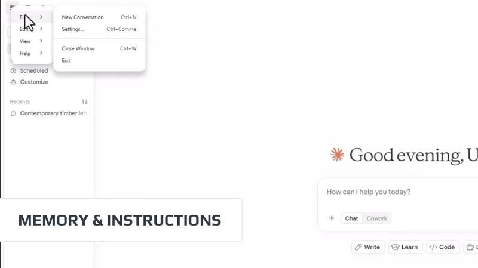
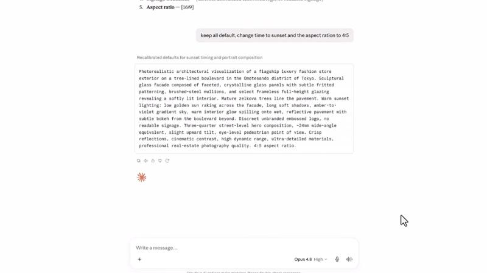
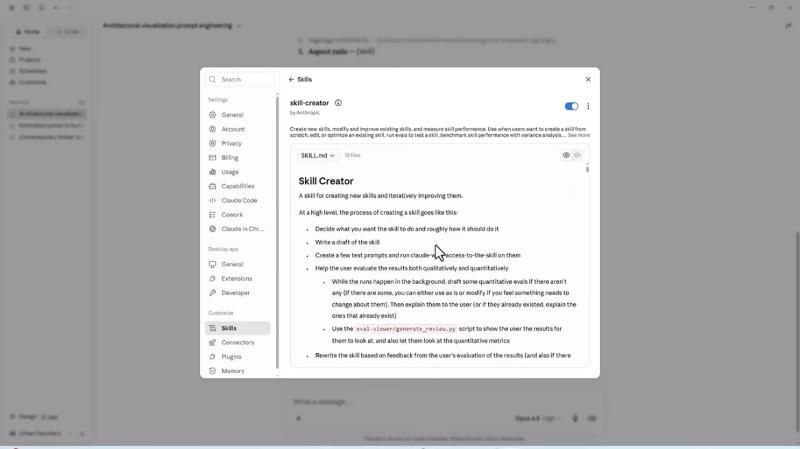
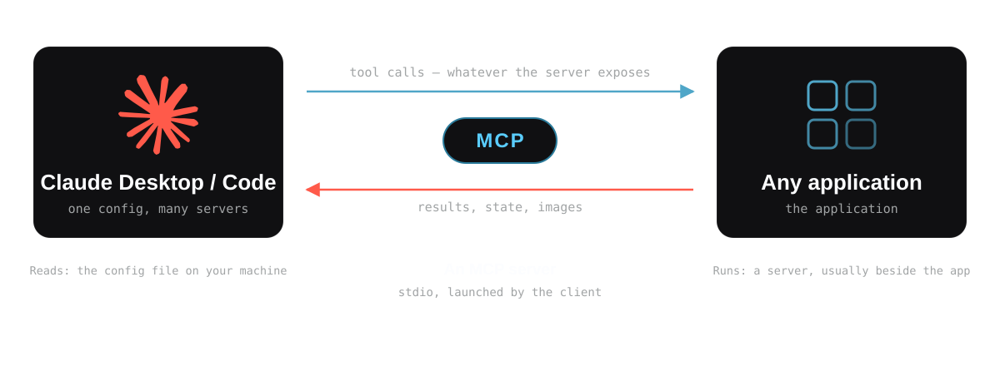
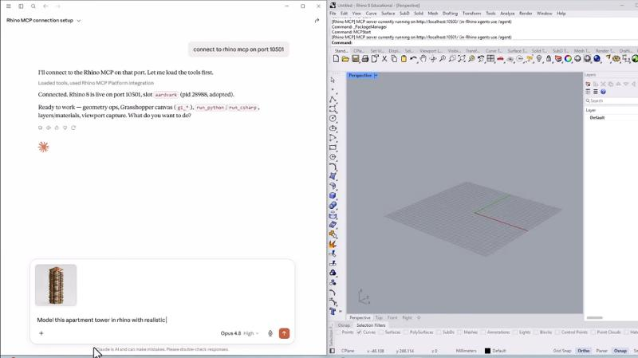
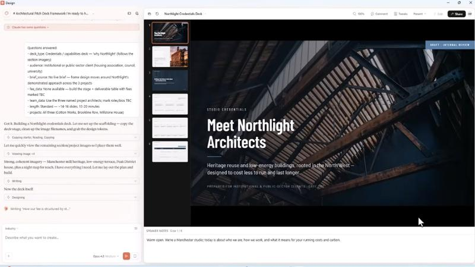
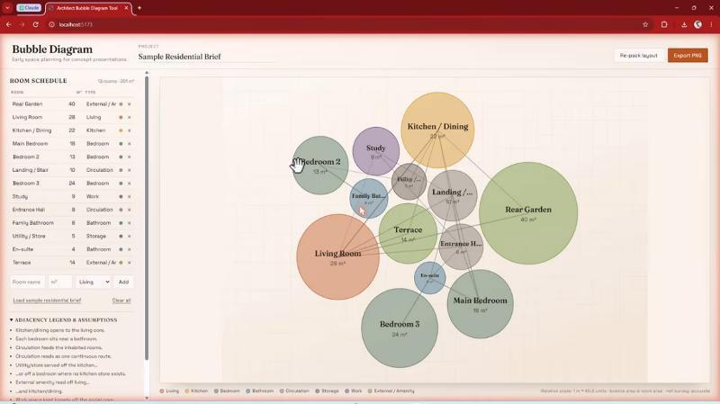

If you use Claude as a chat window you are using roughly a tenth of it. The value for a practice shows up when you stop asking questions and start running workflows — fed with your project documents, your standards and your way of working.
This is a tour of the parts worth setting up, in the order it makes sense to set them up, each shown on a task an architect actually has.
1. Custom instructions and memory, first
Before any of the rest. In settings you can set your role, tone, audience and format once, instead of restating them in every conversation. Fewer tokens, and answers pitched where you need them.

The point is that the same tool becomes two different assistants depending on what you put here. A computational designer asks for technical answers naming the tools they use; a senior architect who does not write code asks for plain explanations and no jargon. Write yours accordingly.
While you are in there, turn on generate memory from chats and search and reference chats. Previous conversations then inform new ones.
2. Pick the model deliberately
Speed against reasoning against cost. As a rough division: Sonnet for everyday work, Opus when the quality of thinking matters more than the wait, Fable at the top for the most demanding runs.
"What is embodied carbon in buildings" does not need the expensive model. A drawing-set interrogation does. Get at least a Pro account so you are not fighting limits, though the free tier is fine for trying this.
3. Structure the prompt — or have it interview you
Most people write one long sentence and hope. The alternative is to tell the model what to change, what to protect, and then have a conversation.
The neat trick here: give it a role, then make it interview you. Cast it as a prompt engineer for Nano Banana, hand it a list of questions to ask, and give it a rough idea — a flagship fashion store exterior in Omotesando, say.

It asks about composition, lighting, materials, aspect ratio. You accept the defaults or override them. What comes back is a properly formatted prompt you can paste into any image generator.
4. Turn the thing you just did into a skill
A skill teaches Claude to do a task the same way every time. Settings → Skills is where they live, and there is already one there for making skills.
The easiest way to build one is to do the task first, then say "turn this into a skill." It reviews the conversation, works out the steps, and shows you a summary to approve before saving.

Trigger it with the phrase you set. "Create a Gemini image prompt for a contemporary open-plan living interior" then runs the whole interview again, without you rewriting any of it.
The same pattern works for anything repetitive. Turning a photographed timetable or schedule into a formatted Excel file is one prompt; packaging it as a skill makes it one phrase, for any image, forever.
Before you upload anything. Under privacy you can toggle training off, and the ghost button gives you an incognito chat — but incognito also disables memory and history, so it is a blunt instrument. Most practices should be on a Teams or Enterprise account, where memory is retained, data is not trained on, and there are data agreements. Check your organisation's AI policy, use the right commercial account, and do not upload confidential material you do not need to.
5. Projects, for the documents you keep coming back to
A project is a persistent workspace that holds recurring context — the team's documents, in one place.
The example: a bid-request summariser. Upload a tender pack, then define the structure you want out of it, and — this is the important part — add guardrails at the bottom instructing it not to invent anything not in the documents.
What comes back is a high-level summary, a programme table, scope and deliverables, suggested rates against a standard rate table, and two sections that earn the whole exercise: risks and potential misses, and what information is still missing and needs requesting.
Save it out as a Word document and circulate it rather than asking six people to read the full pack.
6. Deep research, for the questions that need sources
For structured investigation across many sources rather than a quick answer. Ask it how AI and digital twins can support climate-responsive masterplanning and it will work through live urban data, environmental simulation and mobility patterns.
It can take up to fifteen minutes, and it returns the source structure alongside the findings — so you can dig in and check. That is also a decent market research tool.
7. MCP: connect it to the software you actually use
Claude does not generate images, video or 3D itself. It connects to things that do, through MCP — a standard for letting assistants take action in external applications.

For Rhino: install the connector from the McNeel documentation, add it under settings → extensions, then install Rhino MCP Platform through the Rhino package manager. Restart, type MCP in the command bar, note the localhost port, and ask Claude to connect to it.

Drag in an image, ask it to model it with appropriate layers, and you can watch it reason about heights, categories, structure and planting before any geometry appears. The layers come out organised, which is the difference between a model and a mesh.
The same technique connects image and video generators. OpenArt's MCP is a single connector that reaches most current models — paste the URL under settings → connectors → custom connector. Combined with the prompt skill from step 4, you can go from an idea to a generated image without leaving the conversation.
8. Design, for anything client-facing
Claude Design has its own window because there is a lot in it. Start from a template — slides, for a pitch deck — and then set the design system: your brand colours, type and logos. You can teach it one from your own material and reuse it on every deck after that.

Add your project details, images and CVs, write the structure you want and the guardrails, and let it run. It asks clarifying questions first — about audience, about the client — which is what stops it inventing. Mistakes happen (white text on light grey, in this run); you can fix them by hand, or ask for the fix across every slide at once. Export to PowerPoint and carry on.
9. Cowork and Claude Code
Cowork moves it from chat into action on your machine — folders, files, scheduled jobs. Watch the permissions. A weekly digest of architectural news from sources you choose, saved to your drive and emailed to you, is a realistic first use.
Claude Code is for building something structured: a small app, a dashboard, a script. Mostly used from a terminal. The example here was a bubble diagram tool for early space planning — enter rooms and areas, get scaled bubbles you can drag.

About ten minutes. Write the brief in a separate document first and paste it in, rather than improvising. The same approach covers fee estimators, brief checkers, parking calculations, mood-board generators — the small internal tools nobody ever has time to build.
The shift worth noticing
Claude became useful to practices not because the answers got better but because it started sitting across whole workflows. The move is from advice to action: from helping you think about the work to doing parts of it.
Set up instructions and memory, build two or three skills around things you repeat, and connect one piece of software. That is a weekend, and it is most of the value.